Part one takes the reference edit apart: pacing, transitions, type, graphic devices, and the finish. Part two rebuilds the fridge reel in that language, as real 1080×1920 frames from my pipeline, on the locked v2 cut. Grey halftone shapes stand in for your cutouts, photos and real screenshots.
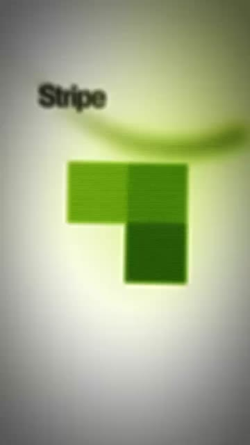
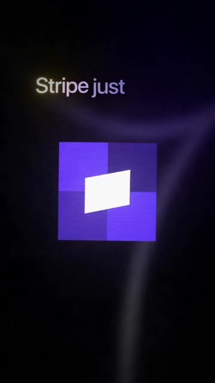
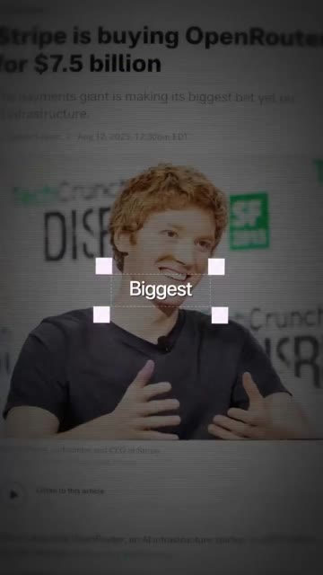
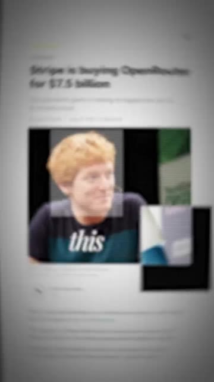
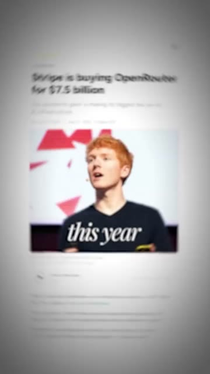
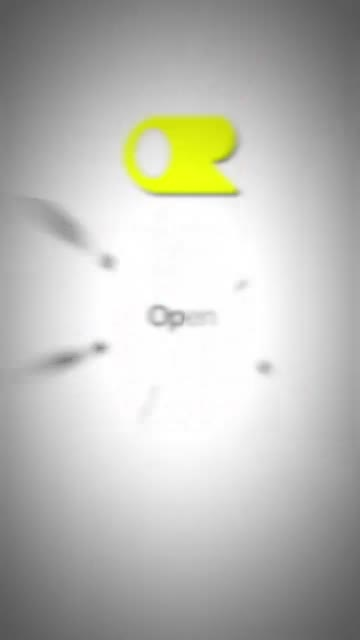
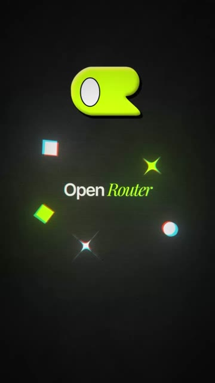
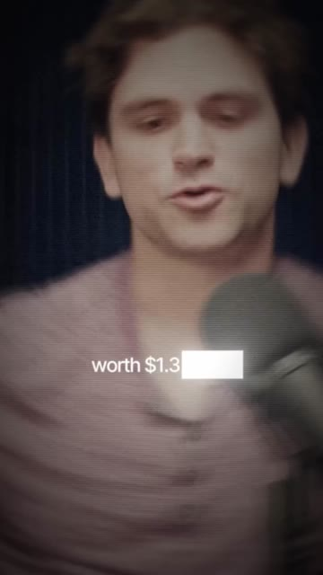
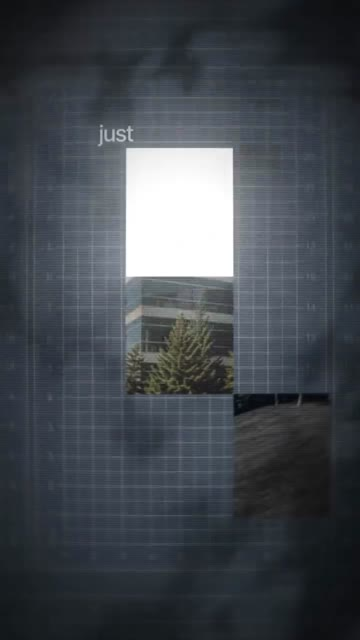
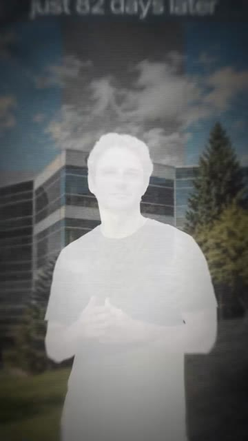
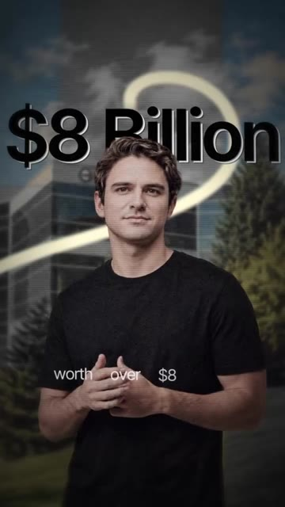
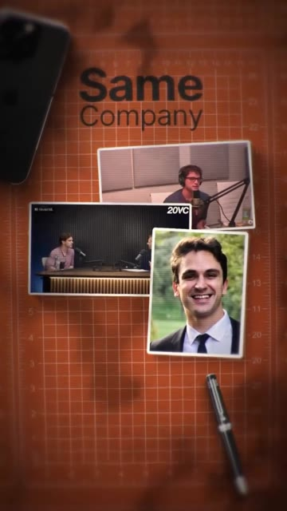
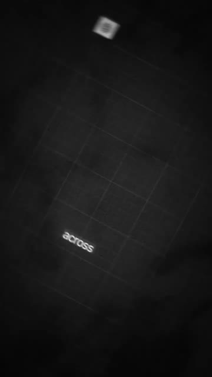
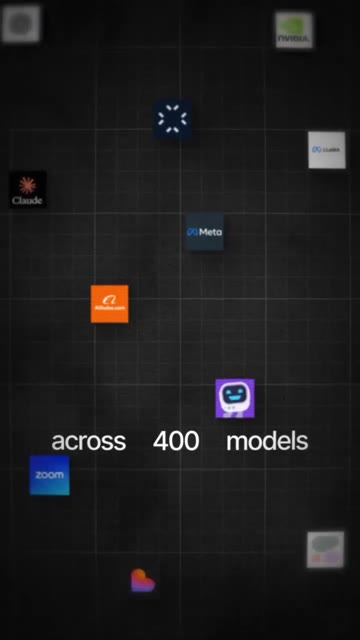
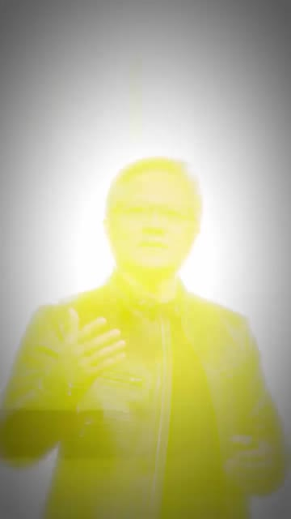
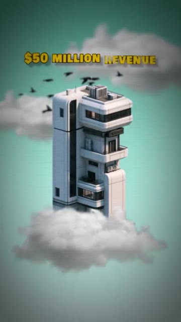
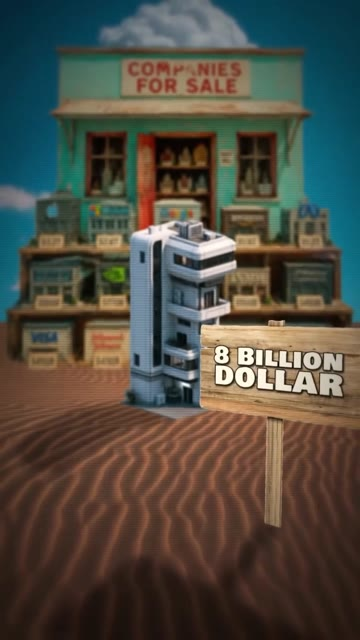
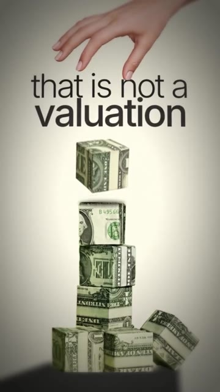
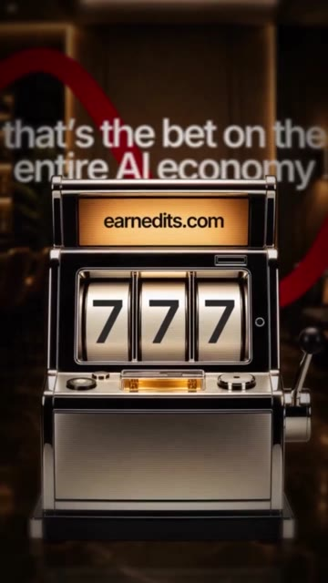
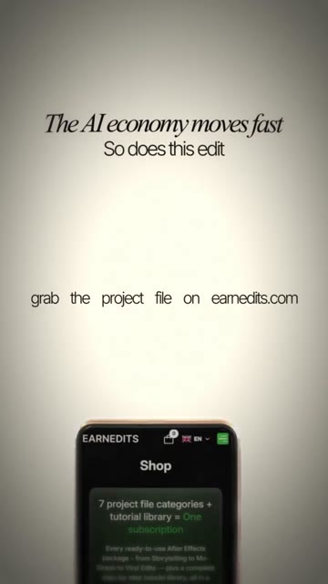
The cut and zoom stay exactly as locked. What changes is everything on top: more coverage, a designed moment on every number, type behind your head, micro captions, and a transition on each B-roll entrance.